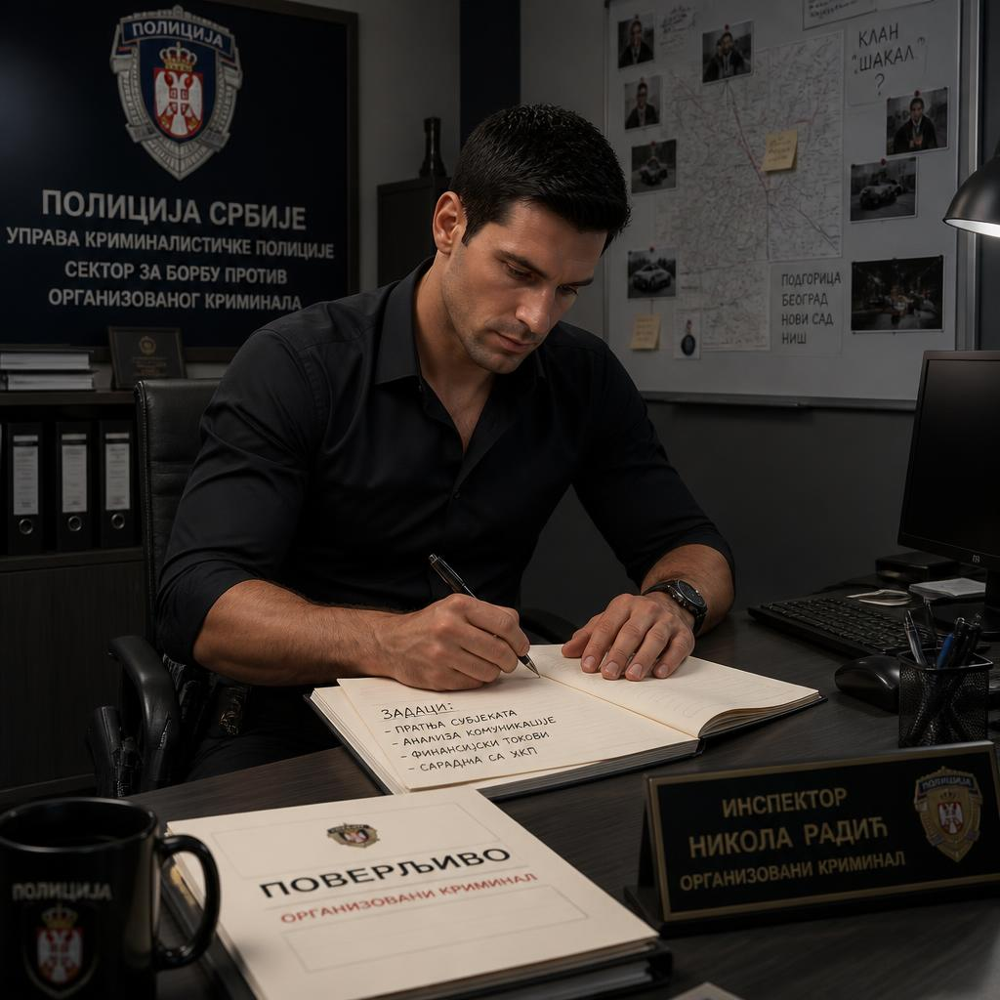

Inspector Nikola RadićAuthorised access
ACTIVE INVESTIGATIONCase KT256/26 · Classification: CONFIDENTIAL
CASE STATUSIN PROGRESSOpened 26 April 2026
PERSONS ON FILE31 victim · 2 persons of interest
DOCUMENTS7Case files and official records
DIGITAL SOURCES3Phone, encrypted communications and anonymous channel
Quick Access
01
Milan Balović's Phone
Mobile forensics. PIN and phone contents.
OPEN MODULE → 02Anonymous Communication Channel
Secure messages and evidence downloads.
OPEN MODULE → 03Investigative GIS
Search coordinates and locate the body recovery site.
OPEN MODULE → 04Indictment and Trial
Build the case and submit the evidence you have collected.
OPEN MODULE →Recent Activity
Autopsy report added to the case fileInstitute of Forensic Medicine
Autopsy performed on Milan BalovićForensics / forensic medicine
Crime scene examination completed at the Kaldrma restaurantCrime scene investigation team
Official Records
Documents linked to case KT256/26
IZ-01
VIEW
DOWNLOAD ↓
Witness Statement — Danijel Ilić
Waiter · Case KT256/26
IZ-02
VIEW
DOWNLOAD ↓
Witness Statement — Milan Stojanović
Owner of the Kaldrma restaurant · Case KT256/26
People and Intelligence Files
Central register of people linked to the case


Digital Forensics
Access seized devices and communications
Investigation Tools
Specialised systems linked to the case
Media Coverage
Media reports linked to case KT256/26
NOTEMedia reports may contain unconfirmed or inaccurate claims. They should be read separately from official findings.